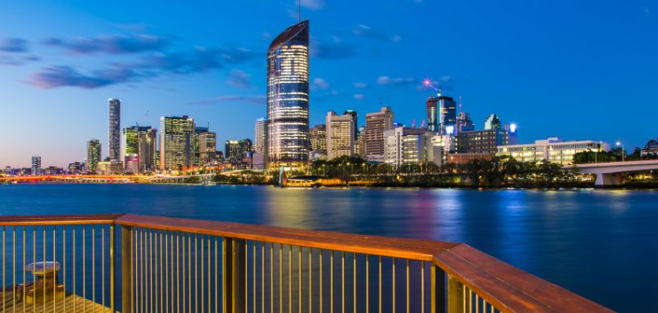

Australian universities are known for providing high-quality education in architecture. Many universities have well-established architecture programs with experienced faculty members and state-of-the-art facilities. The curriculum is designed to equip students with the knowledge and skills required to excel in the field of architecture. Australia offers a wide range of career opportunities for architects. The country has a robust construction industry and a growing demand for innovative architectural solutions. Australian cities are undergoing significant urban development and renewal, creating opportunities for architects to contribute to major infrastructure projects, sustainable design initiatives, and urban planning endeavours.
What are the best colleges for Architecture in Australia?
There are several universities for Architecture. These institutions offer comprehensive programs which cover architecture as a whole. This includes design theory, history, construction techniques, sustainability and digital technologies. Some of the reputed architecture colleges offer both undergraduate and postgraduate programs in Architecture.
Listed below are some renowned institutions:
- The University of Melbourne
- University of Sydney
- RMIT University
- Queensland University of Technology
- The University of New South Wales
- Deakin University
- Monash University
- University of Technology Sydney (UTS)
- Curtin University
- University of Adelaide
What is the eligibility criteria for architecture in Australia?
The eligibility criteria depends on the university the student is applying to. There are certain guidelines that need to be followed by the students in order to secure their admission in the desired college.
1. Academic Qualification
Every university expects the intended student to qualify in secondary education or equivalent such as high school/high-school diploma or equivalent. One needs to have the minimum marks set by the university offering the program.
2. Portfolio
Architecture colleges require the submission of portfolio showcasing the student’s design skills and creativity. The portfolio typically includes examples of your artwork, design projects, sketches, and any relevant architectural or creative work. The portfolio allows the admissions committee to assess your artistic and creative aptitude.
3. English Language proficiency/test scores
This is usually done through standardized tests such as the IELTS (International English Language Testing System), TOEFL (Test of English as a Foreign Language), or PTE (Pearson Test of English). Each university may have specific minimum scores or requirements for English language proficiency.
4. Statement of Purpose/ Personal statement or intent
Some universities may require a personal statement or statement of intent as part of the application process. This is an opportunity for you to express your motivation for studying architecture, your career goals, and how the specific program aligns with your interests and aspirations.
5. Interview and auditions
Universities may require applicants to participate in interviews or auditions as part of the selection process. These interviews or auditions may assess your verbal communication skills, design thinking abilities, and passion for architecture.
Required documents
These are the documents required for your application to architecture courses in Australia:
- Official academic transcripts
- Scanned copy of the passport
- CV/ Resume
- Letter of Recommendation
- English language proficiency test scores
- Statement of Purpose
- Two Reference Letters
Cost of Architecture in Australia
Tuition fees for architecture programs can range from around AUD 25,000 to AUD 45,000 per year for undergraduate degrees. The average tuition fee for Masters in Architecture in Australia is approximately 27,000-47,000 AUD (16 lakhs-27 lakhs INR) per year.
Job prospects
The job prospects for architecture graduates in Australia can be positive, although they can vary depending on factors such as the economic climate, demand for architectural services, and individual skills and experience.
Construction Industry
The country experiences continuous urban development, infrastructure projects, and building renovations, which contribute to a steady demand for architectural services.
Urban Planning and Design
There is a demand for people who can contribute to sustainable urban planning, community design, and public spaces as Australian cities see major growth and renovation.
Sustainable Design
Australian architecture places a high premium on sustainability because of environmental concerns.
Regional Opportunities
These regions often require architects to work on projects related to regional development, infrastructure, and community planning.
Government and Public Sector
Architects can find employment opportunities within government departments, local councils, and public sector organizations involved in planning and development.
Private Architecture Firms
Many architects work in private architectural firms, which offer a range of projects in residential, commercial, institutional, and industrial sectors.
Self-Employment and Entrepreneurship
This path allows for greater control over projects and design direction, but it also requires entrepreneurial skills and the ability to manage a business.
Application procedure
- Compile all your documents like SOPs, essays, certificates, LORs and exam scores like IELTS, TOEFL, GRE, GMAT, etc.
- Meet all the application deadlines and start the application process for accommodation, student's visa, and scholarships/student loans.
- Accept the offer letter.
- Get your visa approved.
For further assistance or queries students can contact us, Edwise International and avail our wide range of services for students on destinations like study in UK,study in USA, study in Canada, study in Australia, study in New-Zealand, study in Singapore, study in Ireland and many other countries.